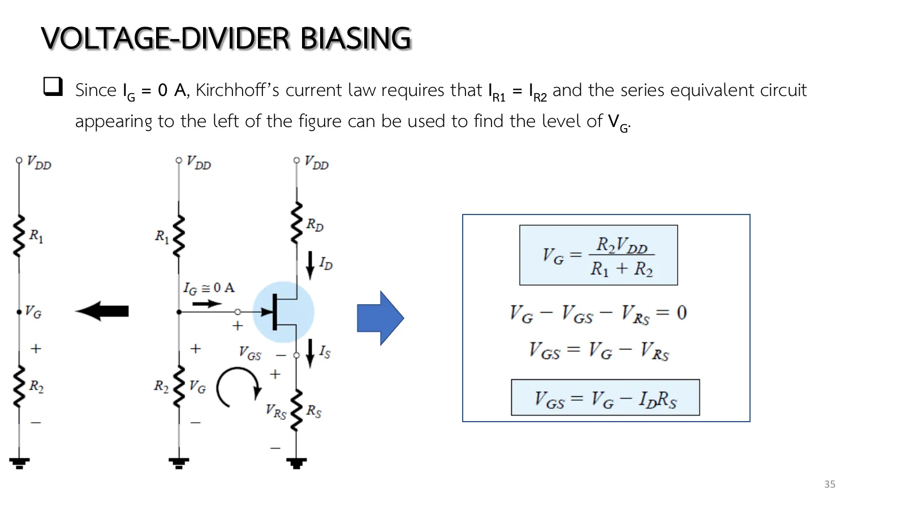
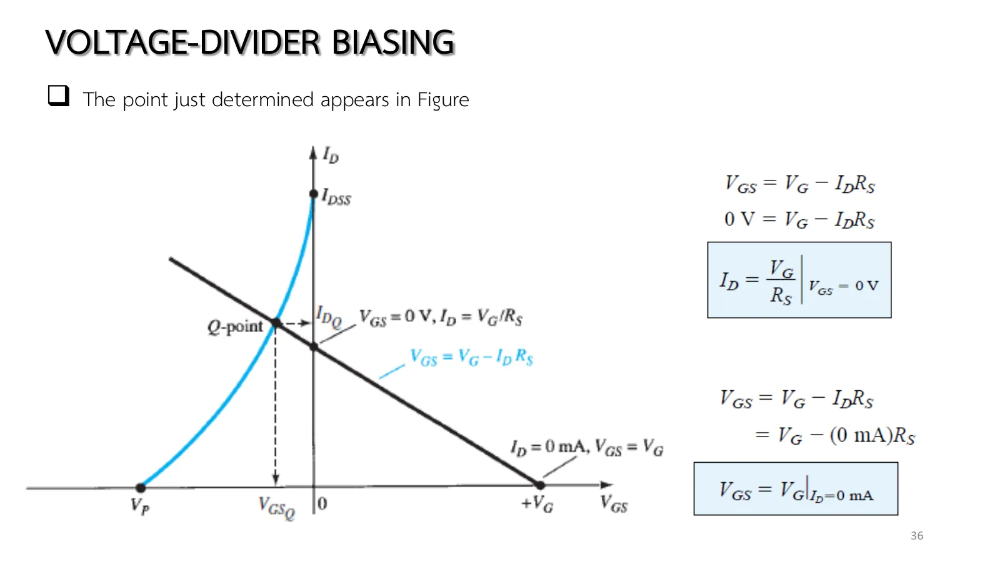
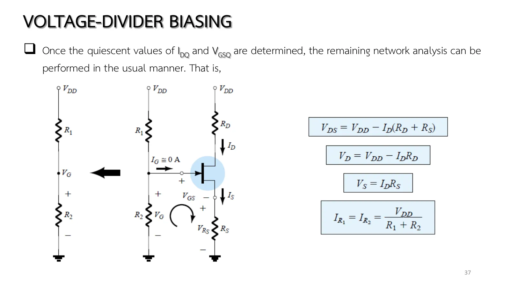
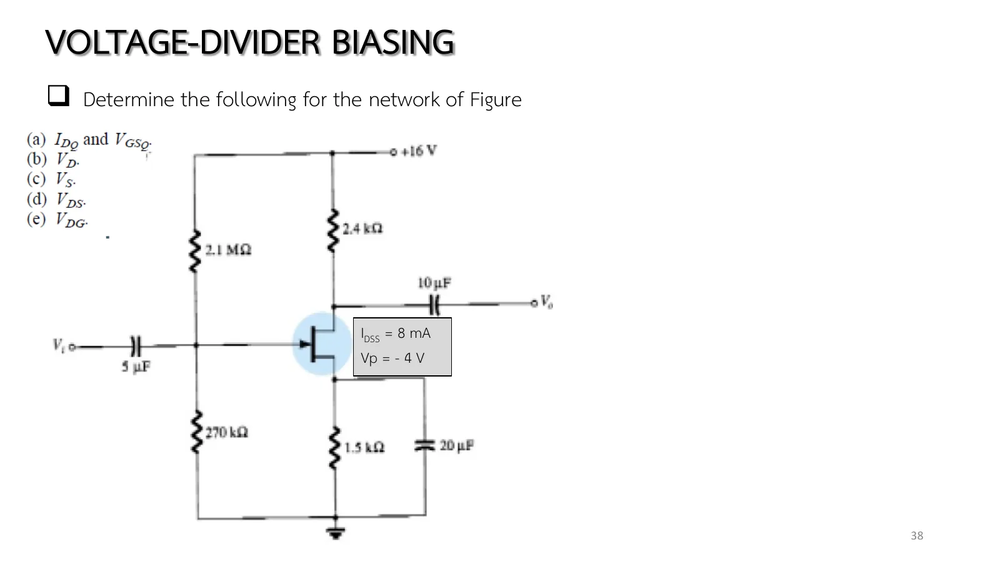

The bipolar junction transistor (BJT) divider of page 4.3 had to watch its base current, which pulls the base voltage down, hence the Thévenin step or the check \(\beta R_E \ge 10R_2\). The same circuit with a junction field-effect transistor (JFET) has no such worry: the gate draws no current, so the divider \(R_1\), \(R_2\) gives \(V_G\) directly, even with resistors in the megohms. What is new shows on the graph: the network line \(V_{GS} = V_G - I_DR_S\) no longer passes through the origin; it crosses the horizontal axis at a positive \(V_G\) and the vertical axis at \(V_G/R_S\). This page has a circuit whose \(R_1\), \(R_2\), \(R_S\), \(R_D\), \(V_{DD}\) you can change (section A), Example 7.4 in all five parts, the effect of \(R_S\) as in Fig. 7.20, and more practice (chapter 5 slides, pp. 34–38; Boylestad section 7.4).
The circuit (slide p. 34, Figs. 7.17–7.18): \(R_1\), \(R_2\) set the gate voltage, \(R_S\) sits at the source, \(R_D\) at the drain. Every capacitor, including \(C_S\) across \(R_S\), is open for dc, and \(V_{DD}\) is split into two equal sources to separate the gate side from the drain side.
\(V_G\) from the divider (slide p. 35, Eq. 7.15): \(I_G\) = 0 forces \(I_{R_1} = I_{R_2}\), so the voltage-divider rule applies directly, unlike the BJT, whose \(I_B\) pulls the base down and needs Thévenin or the criterion \(\beta R_E \ge 10R_2\).
The network equation (Eq. 7.16): the gate–source loop \(V_G - V_{GS} - I_DR_S = 0\) gives \(V_{GS} = V_G - I_DR_S\), drawn from its two intercepts: \(I_D\) = 0 gives \(V_{GS} = V_G\) (Eq. 7.17), \(V_{GS}\) = 0 gives \(I_D = V_G/R_S\) (Eq. 7.18). Q is the intersection with the transfer curve left of the vertical axis (slide p. 36, Fig. 7.19).
The effect of \(R_S\) (Fig. 7.20): the horizontal intercept \(V_G\) is pinned by the divider, so the line pivots about it; a larger \(R_S\) gives a lower \(I_{D_Q}\) and a more negative \(V_{GS_Q}\).
The rest as before (slide p. 37, Eqs. 7.19–7.22): \(V_{DS} = V_{DD} - I_D(R_D + R_S)\), \(V_D = V_{DD} - I_DR_D\), \(V_S = I_DR_S\), \(I_{R_1} = I_{R_2} = V_{DD}/(R_1 + R_2)\).
Slide p. 34 draws the circuit twice. Fig. 7.17 is the real circuit: \(R_1\), \(R_2\) set the gate voltage, \(R_S\) with its bypass capacitor \(C_S\) sits at the source, and \(R_D\) at the drain. Fig. 7.18 is the same circuit for dc: every capacitor, \(C_S\) included, becomes an open circuit, and \(V_{DD}\) is split into two equal sources so that the gate side and the drain side come apart.
Once they are apart it is plain that the gate side is a voltage divider with nothing drawing current from it, because \(I_G \cong 0\).
สไลด์บทที่ 5 หน้า 34: วงจรตัวแบ่งแรงดันและวงจรสำหรับกระแสตรง (รูป 7.17–7.18) · แตะรูปเพื่อขยายChapter 5 slide p. 34: the divider circuit and its dc network (Figs. 7.17–7.18) · tap to enlarge
Slide p. 35 uses \(I_G\) = 0 to force \(I_{R_1} = I_{R_2}\), which gives \(V_G = R_2V_{DD}/(R_1 + R_2)\) directly, and the gate–source loop then gives \(V_{GS} = V_G - I_DR_S\). Slide p. 36 draws this line from its two axis intercepts, (\(V_G\), 0) and (0, \(V_G/R_S\)) (Fig. 7.19), and slide p. 37 finishes with the remaining equations: \(V_{DS}\), \(V_D\), \(V_S\) and the divider current. Before moving \(R_2\), guess whether a higher \(V_G\) makes Q climb or slide down the curve.

สไลด์หน้า 35: \(V_G\) จากตัวแบ่ง และ \(V_{GS} = V_G - I_DR_S\) (สมการ 7.15–7.16) · แตะรูปเพื่อขยายSlide p. 35: \(V_G\) from the divider, and \(V_{GS} = V_G - I_DR_S\) (Eqs. 7.15–7.16) · tap to enlarge

สไลด์หน้า 36: จุดตัดสองแกนของเส้นและจุด Q (รูป 7.19) · แตะรูปเพื่อขยายSlide p. 36: the line's two intercepts and Q (Fig. 7.19) · tap to enlarge

สไลด์หน้า 37: ที่เหลือของการวิเคราะห์ (สมการ 7.19–7.22) · แตะรูปเพื่อขยายSlide p. 37: the rest of the analysis (Eqs. 7.19–7.22) · tap to enlarge
Start from the circuit of Example 7.4. The upper graph is Fig. 7.19: the network line from (\(V_G\), 0) through (0, \(V_G/R_S\)) meets the transfer curve at Q. The lower one is the load line. Move \(R_S\): the line pivots about \(V_G\) (Fig. 7.20). Move \(R_2\): \(V_G\) slides along the horizontal axis and takes the whole line with it. Notice that no dots run into the gate at all, and the ones in the divider crawl, since that current is in microamperes.
1
Example 7.4: วงจรตัวแบ่งแรงดันครบทุกค่า
Example 7.4: the divider circuit, every value
สไลด์หน้า 38 · Boylestad Example 7.4 (รูป 7.21–7.22)
Slide p. 38 · Boylestad Example 7.4 (Figs. 7.21–7.22)
Slide p. 38 is Example 7.4. Note the 2.1 MΩ and 270 kΩ divider: values like these work only because the gate draws no current. Before opening the solution, find \(V_G\) and the two intercepts, then guess whether Q will sit at a positive or a negative \(V_{GS}\), even though \(V_G\) is positive.

สไลด์หน้า 38: โจทย์ Example 7.4 (รูป 7.21) · แตะรูปเพื่อขยายSlide p. 38: Example 7.4 (Fig. 7.21) · tap to enlarge
Use the graph (the line through (1.82 V, 0) and (0, \(V_G/R_S\))) or solve the quadratic; the answers are exact, with a tolerance for graph reading. Try it first.
C
ฝึกเพิ่ม
More practice
\(I_G\) = 0 · ตอบทศนิยมอย่างน้อย 2 ตำแหน่ง
\(I_G\) = 0 · give at least 2 decimal places
ลองทำดู 1 — จุดหมุน \(V_G\)
ส่วน A เลื่อน \(R_S\) จาก 1.5 kΩ ไป 4 kΩ: จุดตัดแกนตั้ง \(V_G/R_S\) ลดจาก 1.21 เหลือ 0.46 mA เส้นราบลงรอบจุด (1.82 V, 0) และ \(I_D\) ลดจาก 2.4 เหลือราว 1.1 mA
In section A move \(R_S\) from 1.5 kΩ to 4 kΩ: the vertical intercept \(V_G/R_S\) falls from 1.21 to 0.46 mA, the line flattens about (1.82 V, 0), and \(I_D\) falls from 2.4 to about 1.1 mA.
Raise \(R_2\) to 1 MΩ: \(V_G\) = 5.2 V, the pivot moves right, the whole line lifts, and \(I_D\) rises to about 3.8 mA, but \(V_{DS}\) is down to about 1.3 V, below \(V_{GS} - V_P\) (about 3.5 V): Q has slipped into the ohmic region, as the badge says, and Shockley's equation no longer applies. Raise \(V_G\) much further and Q would reach \(V_{GS}\) > 0, where a JFET should not operate (a forward-biased gate junction).
Lowering \(R_D\) or raising \(V_{DD}\) does not move Q on the upper graph at all (\(I_D\), \(V_{GS}\) depend on the gate side only); it only changes \(V_{DS}\), as long as the device stays in saturation.
Try this 2 — compared with the BJT
Problem 1: with a BJT (page 4.3) one must first ask whether \(\beta R_E \ge 10R_2\); with a JFET there is no need: \(I_G\) = 0 makes \(V_G\) = 1.82 V exact, whatever the device.
Problem 2: write the quadratic for \(R_S\) = 3 kΩ, \(I_D = 8(1 - (1.82 - 3I_D)/(-4))^2\), and compare with the value found.
Chapter 5 slides pp. 34–38 · Boylestad & Nashelsky, 11th ed., section 7.4 (Figs. 7.17–7.22, Eqs. 7.15–7.22, Example 7.4)